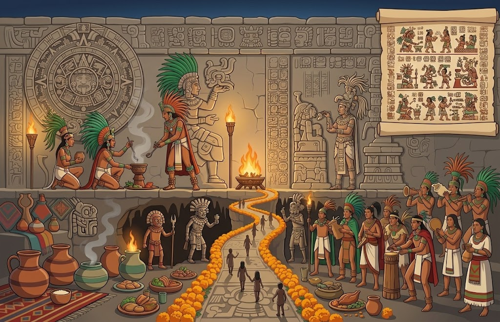
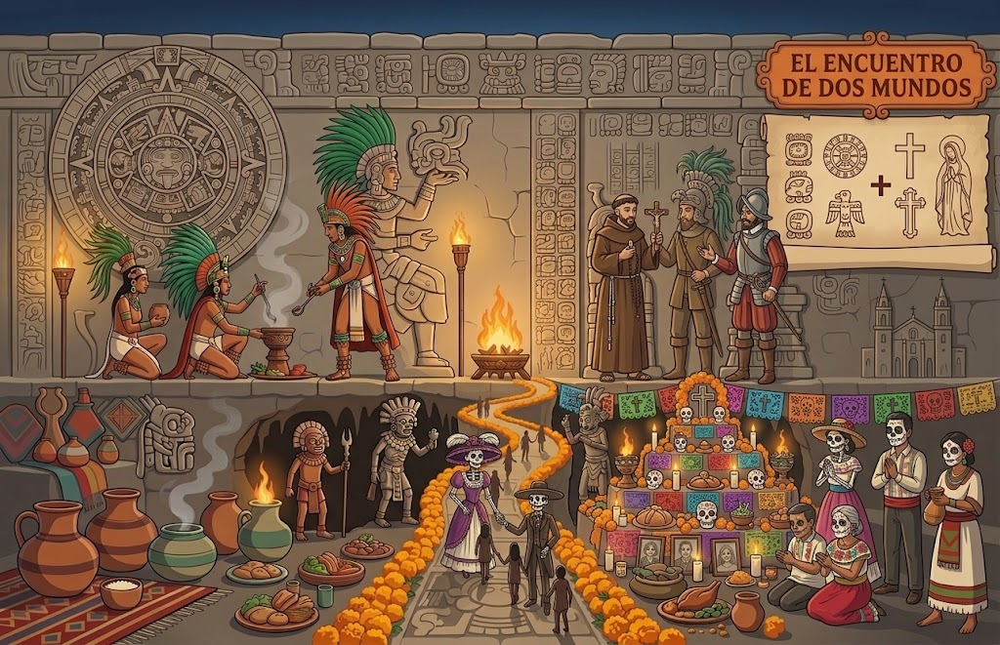

Los Orígenes de la Tradición
Raíces Prehispánicas
El Día de los Muertos tiene un origen milenario que se remonta a las culturas indígenas de Mesoamérica, como los aztecas, mayas y purépechas. Para estos pueblos antiguos, la muerte no representaba un final triste, sino un viaje natural hacia el Mictlán, el lugar de los muertos. Celebrar la vida de los ancestros era una práctica sagrada llena de respeto, rituales y alegría.

El Encuentro de Dos Mundos
Con la llegada de los españoles en el siglo XVI, ocurrió un sincretismo cultural fascinante. Los rituales indígenas para honrar a los difuntos se mezclaron con las festividades católicas del Día de Todos los Santos y los Fieles Difuntos. Esta mágica fusión dio lugar a la colorida, compasiva y rica celebración que México comparte hoy con el mundo entero.
